Dimensionality reduction¶
The curse of dimensionality¶
Fitting and overfitting get worse with ‘’curse of dimensionality’’ Bellman 1961
Think about a hypersphere. Its volume is given by
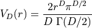
where 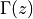 is the complete gamma function, 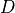 is the dimension, and  the radius of the sphere.
the radius of the sphere.
If you populated a hypercube of size 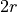 how much data would be enclosed by the hypersphere
as increases the fractional volume enclosed by the hypersphere goes to 0!
For example: the SDSS comprises a sample of 357 million sources.
each source has 448 measured attributes
selecting just 30 (e.g., magnitude, size..) and normalizing the data range 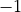 to

probability of having one of the 357 million sources reside within a unit hypersphere 1 in 1.4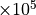.
Principal Component Analysis¶
Points are correlated along a particular direction which doesn’t align with the initial choice of axes.
we should rotate our axes to align with this correlation.
rotation preserves the relative ordering of data
Choose rotation to maximize the ability to discriminate between the data points
first axis, or principal component, is direction of maximal variance
second principal component is orthogonal to the first component and maximizes the residual variance
…
In the following example a distribution of points drawn from a bivariate Gaussian and centered on the
origin of  and
and  .
PCA defines a rotation such that the new axes (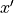 and 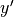) are aligned along the directions of maximal
variance (the principal components) with zero covariance. This is equivalent to minimizing the square of
the perpendicular distances between the points and the principal components.
.
PCA defines a rotation such that the new axes (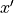 and 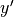) are aligned along the directions of maximal
variance (the principal components) with zero covariance. This is equivalent to minimizing the square of
the perpendicular distances between the points and the principal components.
import numpy as np
from matplotlib import pyplot as plt
from matplotlib.patches import Ellipse
from matplotlib import ticker
np.random.seed(42)
r = 0.9
sigma1 = 0.25
sigma2 = 0.08
rotation = np.pi / 6
s = np.sin(rotation)
c = np.cos(rotation)
X = np.random.normal(0, [sigma1, sigma2], size=(100, 2)).T
R = np.array([[c, -s],
[s, c]])
X = np.dot(R, X)
#------------------------------------------------------------
# Plot the diagram
fig = plt.figure(figsize=(5, 5), facecolor='w')
ax = plt.axes((0, 0, 1, 1), xticks=[], yticks=[], frameon=False)
# draw axes
ax.annotate(r'$x$', (-r, 0), (r, 0),
ha='center', va='center',
arrowprops=dict(arrowstyle='<->', color='k', lw=1))
ax.annotate(r'$y$', (0, -r), (0, r),
ha='center', va='center',
arrowprops=dict(arrowstyle='<->', color='k', lw=1))
# draw rotated axes
ax.annotate(r'$x^\prime$', (-r * c, -r * s), (r * c, r * s),
ha='center', va='center',
arrowprops=dict(color='k', arrowstyle='<->', lw=1))
ax.annotate(r'$y^\prime$', (r * s, -r * c), (-r * s, r * c),
ha='center', va='center',
arrowprops=dict(color='k', arrowstyle='<->', lw=1))
# scatter points
ax.scatter(X[0], X[1], s=25, lw=0, c='k', zorder=2)
# draw lines
vnorm = np.array([s, -c])
for v in (X.T):
d = np.dot(v, vnorm)
v1 = v - d * vnorm
ax.plot([v[0], v1[0]], [v[1], v1[1]], '-k')
# draw ellipses
for sigma in (1, 2, 3):
ax.add_patch(Ellipse((0, 0), 2 * sigma * sigma1, 2 * sigma * sigma2,
rotation * 180. / np.pi,
ec='k', fc='gray', alpha=0.2, zorder=1))
ax.set_xlim(-1, 1)
ax.set_ylim(-1, 1)
plt.show()
Derivation of principal component analyses¶
Set of data 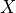:  observations by
observations by  measurements
measurements
Center data by subtracting the mean
The covariance is
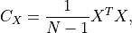
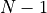 as the sample covariance matrix.
We want a projection,  , aligned with the directions of maximal variance (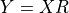) with covariance
, aligned with the directions of maximal variance (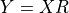) with covariance
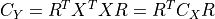
Derive principal component by maximizing its variance (using Lagrange multipliers and constraint)
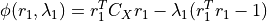
derivative of 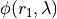 with respect to 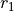 set to 0
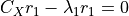
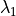 is the root of the equation 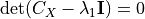 and the largest eigenvalue
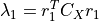
Other principal components derived by applying additional constraint that components are uncorrelated (e.g., 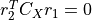).
Singular value decomposition (SVD)¶
Common approach is eigenvalue decomposition of the covariance or correlation matrix, or singular value decomposition (SVD) of the data matrix
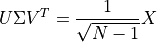
columns of 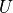 are left-singular vectors
columns of 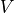 are the right-singular vectors
The columns of and form orthonormal bases (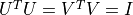)
Covariance matrix is
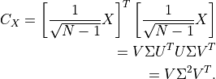
right singular vectors are the principal components so principal from the SVD of dont need 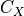.
Application of PCA¶
In the following example we have 100 data points in 3 dimensions, , and as the projection matrix. To compute the PCA components (4 in our case) we use PCA from scikit-learn.
from sklearn.decomposition import PCA
X = np.random.normal(size=(100, 3))
R = np.random.random((3, 10))
X = np.dot(X, R)
pca = PCA(n_components=4)
pca.fit(X)
comp = pca.transform(X)
mean = pca.mean_
components = pca.components_
var = pca.explained_variance_
For our astronomy use case, we are using the SDSS spectroscopic dataset. The SDSS spectra come from galaxies at a range of redshifts, and have sections of unreliable or missing data due to sky absorption, cosmic rays, bad detector pixels, or other effects. AstroML provides a set of spectra which have been moved to rest frame, corrected for masking using an iterative PCA reconstruction technique, and resampled to 1000 common wavelength bins.
The spectra can be downloaded using fetch_sdss_corrected_spectra(). In the following example we plot
15 of these spectra:
import numpy as np
from matplotlib import pyplot as plt
from astroML.datasets import sdss_corrected_spectra
#----------------------------------------------------------------------
# Use pre-computed PCA to reconstruct spectra
data = sdss_corrected_spectra.fetch_sdss_corrected_spectra()
spectra_raw = data['spectra']
spectra_corr = sdss_corrected_spectra.reconstruct_spectra(data)
wavelengths = sdss_corrected_spectra.compute_wavelengths(data)
#------------------------------------------------------------
# select random spectra
np.random.seed(5)
nrows = 5
ncols = 3
ind = np.random.randint(spectra_corr.shape[0], size=nrows * ncols)
spec_sample_raw = spectra_raw[ind]
spec_sample_corr = spectra_corr[ind]
We show the SDSS downloaded spectra with black, and our corrected spectra with blue.
fig = plt.figure(figsize=(10, 8))
fig.subplots_adjust(left=0.05, right=0.95, wspace=0.05,
bottom=0.1, top=0.95, hspace=0.05)
for i in range(ncols):
for j in range(nrows):
ax = fig.add_subplot(nrows, ncols, ncols * j + 1 + i)
ax.plot(wavelengths, spec_sample_raw[ncols * j + i], '-k', lw=1)
ax.plot(wavelengths, spec_sample_corr[ncols * j + i], '-k', lw=1, c='blue')
ax.set_xlim(3100, 7999)
ax.yaxis.set_major_formatter(plt.NullFormatter())
ax.xaxis.set_major_locator(plt.MultipleLocator(1000))
if j < nrows - 1:
ax.xaxis.set_major_formatter(plt.NullFormatter())
else:
plt.xlabel(r'wavelength $(\AA)$')
ylim = ax.get_ylim()
dy = 0.05 * (ylim[1] - ylim[0])
ax.set_ylim(ylim[0] - dy, ylim[1] + dy)
plt.show()
PCA Reconstruction of a spectrum¶
Reconstruction of spectrum, 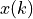, from the eigenvectors, 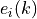
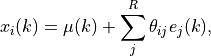
Truncating this expansion (i.e., 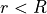)
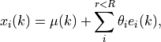
eigenvectors ordered by their associated eigenvalues
eigenvalues reflect variance within each eigenvector (sum of the eigenvalues is total variance of the system).
project a each spectrum onto these first few eigenspectra is a compression of the data
This is the sense in which PCA gives for dimensionality reduction.
In the following example, the input spectrum is shown in gray, and the partial reconstruction for progressively more terms is shown in black. The top panel shows only the mean of the set of spectra. By the time 20 PCA components are added, the reconstruction is very close to the input, as indicated by the expected total variance of 94%.
#------------------------------------------------------------
# Compute PCA components
# Eigenvalues can be computed using PCA as in the commented code below:
#from sklearn.decomposition import PCA
#pca = PCA()
#pca.fit(spectra_corr)
#evals = pca.explained_variance_ratio_
#evals_cs = evals.cumsum()
# because the spectra have been reconstructed from masked values, this
# is not exactly correct in this case: we'll use the values computed
# in the file compute_sdss_pca.py
evals = data['evals'] ** 2
evals_cs = evals.cumsum()
evals_cs /= evals_cs[-1]
evecs = data['evecs']
spec_mean = spectra_corr.mean(0)
#------------------------------------------------------------
# Find the coefficients of a particular spectrum
spec = spectra_corr[1]
coeff = np.dot(evecs, spec - spec_mean)
#------------------------------------------------------------
# Plot the sequence of reconstructions
fig = plt.figure(figsize=(5, 5))
fig.subplots_adjust(hspace=0, top=0.95, bottom=0.1, left=0.12, right=0.93)
for i, n in enumerate([0, 4, 8, 20]):
ax = fig.add_subplot(411 + i)
ax.plot(wavelengths, spec, '-', c='gray')
ax.plot(wavelengths, spec_mean + np.dot(coeff[:n], evecs[:n]), '-k')
if i < 3:
ax.xaxis.set_major_formatter(plt.NullFormatter())
ax.set_ylim(-2, 21)
ax.set_ylabel('flux')
if n == 0:
text = "mean"
elif n == 1:
text = "mean + 1 component\n"
text += r"$(\sigma^2_{tot} = %.2f)$" % evals_cs[n - 1]
else:
text = "mean + %i components\n" % n
text += r"$(\sigma^2_{tot} = %.2f)$" % evals_cs[n - 1]
ax.text(0.02, 0.93, text, ha='left', va='top', transform=ax.transAxes)
fig.axes[-1].set_xlabel(r'${\rm wavelength\ (\AA)}$')
plt.show()
Eigenvalues¶
The eigenvalues for the PCA decomposition of the SDSS spectra described in the previous section. The top panel shows the decrease in eigenvalue as a function of the number of eigenvectors, with a break in the distribution at ten eigenvectors. The lower panel shows the cumulative sum of eigenvalues normalized to unity. 94% of the variance in the SDSS spectra can be captured using the first ten eigenvectors.
fig = plt.figure(figsize=(10, 7.5))
fig.subplots_adjust(hspace=0.05, bottom=0.12)
ax = fig.add_subplot(211, xscale='log', yscale='log')
ax.grid()
ax.plot(evals, c='k')
ax.set_ylabel('Normalized Eigenvalues')
ax.xaxis.set_major_formatter(plt.NullFormatter())
ax.set_ylim(5E-4, 100)
ax = fig.add_subplot(212, xscale='log')
ax.grid()
ax.semilogx(evals_cs, color='k')
ax.set_xlabel('Eigenvalue Number')
ax.set_ylabel('Cumulative Eigenvalues')
ax.set_ylim(0.65, 1.00)
plt.show()
PCA with missing data¶
Observed spectrum, 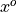 is the true spectrum,  plus a wavelength-dependent weight,
plus a wavelength-dependent weight,  .
.
Weight is zero where data are missing and 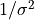 for rest
Minimizing the quadratic deviation between truncated reconstruction, 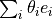 and solving for 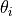 gives
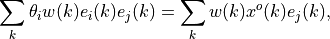
If 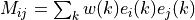 and 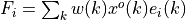 then
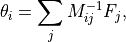
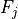 are coefficients derived from gappy data
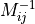 shows how correlated eigenvectors are over the missing regions.
An estimate of the uncertainty on the reconstruction coefficients is given by
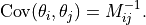
Accuracy of this reconstruction will depend on the distribution of the gaps within the data vector.
The principal component vectors defined for the SDSS spectra can be used to interpolate across or reconstruct missing data. Examples of three masked spectral regions are shown comparing the reconstruction of the input spectrum (black line) using the mean and the first ten eigenspectra (blue line) The gray bands represent the masked region of the spectrum.
evecs = data['evecs']
mu = data['mu']
norms = data['norms']
mask = data['mask']
#------------------------------------------------------------
# plot the results
i_plot = ((wavelengths > 5750) & (wavelengths < 6350))
wavelength = wavelengths[i_plot]
specnums = [20, 8, 9]
subplots = [311, 312, 313]
fig = plt.figure(figsize=(10, 12.5))
fig.subplots_adjust(left=0.09, bottom=0.08, hspace=0, right=0.92, top=0.95)
for subplot, i in zip(subplots, specnums):
ax = fig.add_subplot(subplot)
# compute eigen-coefficients
spectra_i_centered = spectra_corr[i] / norms[i] - mu
coeffs = np.dot(spectra_i_centered, evecs.T)
# blank out masked regions
spectra_i = spectra_corr[i]
mask_i = mask[i]
spectra_i[mask_i] = np.nan
# plot the raw masked spectrum
ax.plot(wavelength, spectra_i[i_plot], '-', color='k',
label='True spectrum', lw=1.5)
# plot two levels of reconstruction
for nev in [10]:
if nev == 0:
label = 'mean'
else:
label = 'reconstruction\n(nev=%i)' % nev
spectra_i_recons = norms[i] * (mu + np.dot(coeffs[:nev], evecs[:nev]))
ax.plot(wavelength, spectra_i_recons[i_plot], label=label, color='grey')
# plot shaded background in masked region
ylim = ax.get_ylim()
mask_shade = ylim[0] + mask[i][i_plot].astype(float) * ylim[1]
plt.fill(np.concatenate([wavelength[:1], wavelength, wavelength[-1:]]),
np.concatenate([[ylim[0]], mask_shade, [ylim[0]]]),
lw=0, fc='k', alpha=0.2)
ax.set_xlim(wavelength[0], wavelength[-1])
ax.set_ylim(ylim)
ax.yaxis.set_major_formatter(ticker.NullFormatter())
if subplot == 311:
ax.legend(loc=1)
ax.set_xlabel('$\lambda\ (\AA)$')
ax.set_ylabel('normalized flux')
plt.show()
Comparing PCA, NMF and ICA¶
Nonnegative Matrix Factorization¶
Eigenvectors are defined relative to mean data vector. Principal components that can be positive or negative but for many physical systems we know data are a linear sum of positive components (e.g. galaxy spectrum is a linear sum of stellar components
Nonnegative matrix factorization (NMF) applies positivity constraint
from sklearn.decomposition import NMF
X = np.random.random((100, 3)) # 100 points in 3 dims, all positive
nmf = NMF(n_components=3) # setting n_components is optional
nmf.fit(X)
proj = nmf.transform(X) # project to 3 dimensions
comp = nmf.components_ # 3 x 10 array of components
err = nmf.reconstruction_err_ # how well 3 components captures data
/Users/bsipocz/.pyenv/versions/3.9.1/lib/python3.9/site-packages/sklearn/decomposition/_nmf.py:312: FutureWarning: The 'init' value, when 'init=None' and n_components is less than n_samples and n_features, will be changed from 'nndsvd' to 'nndsvda' in 1.1 (renaming of 0.26).
warnings.warn(("The 'init' value, when 'init=None' and "
Independent component analysis¶
from sklearn.decomposition import FastICA
X = np.random.normal(size=(100, 2)) # 100 pts in 2 dims
R = np.random.random((2, 5)) # mixing matrix
X = np.dot(X, R) # X is now 2D data in 5D space
ica = FastICA(2) # fit two components
sources = ica.fit_transform(X)
proj = ica.transform(X) # 100 x 2 projection of data
comp = ica.components_ # the 2 x 5 matrix of indep. components
Comparing PCA, NMF and ICA¶
A comparison of the decomposition of SDSS spectra using PCA (left panel), ICA (middle panel) and NMF (right panel). The rank of the component increases from top to bottom. For the ICA and PCA the first component is the mean spectrum (NMF does not require mean subtraction). All of these techniques isolate a common set of spectral features (identifying features associated with the continuum and line emission). The ordering of the spectral components is technique dependent.
from sklearn.decomposition import NMF, FastICA, PCA
data = sdss_corrected_spectra.fetch_sdss_corrected_spectra()
spectra = sdss_corrected_spectra.reconstruct_spectra(data)
wavelengths = sdss_corrected_spectra.compute_wavelengths(data)
#----------------------------------------------------------------------
# Compute PCA, ICA, and NMF components
def compute_PCA_ICA_NMF(n_components=5):
spec_mean = spectra.mean(0)
# PCA: use randomized PCA for speed
pca = PCA(n_components - 1, random_state=0, svd_solver='randomized')
pca.fit(spectra)
pca_comp = np.vstack([spec_mean,
pca.components_])
# ICA treats sequential observations as related. Because of this, we need
# to fit with the transpose of the spectra
ica = FastICA(n_components - 1, random_state=0)
ica.fit(spectra.T)
ica_comp = np.vstack([spec_mean,
ica.transform(spectra.T).T])
# NMF requires all elements of the input to be greater than zero
spectra[spectra < 0] = 0
nmf = NMF(n_components, random_state=0)
nmf.fit(spectra)
nmf_comp = nmf.components_
return pca_comp, ica_comp, nmf_comp
n_components = 5
decompositions = compute_PCA_ICA_NMF(n_components)
#----------------------------------------------------------------------
# Plot the results
fig = plt.figure(figsize=(10, 8))
fig.subplots_adjust(left=0.05, right=0.95, wspace=0.05,
bottom=0.1, top=0.95, hspace=0.05)
titles = ['PCA components', 'ICA components', 'NMF components']
for i, comp in enumerate(decompositions):
for j in range(n_components):
ax = fig.add_subplot(n_components, 3, 3 * j + 1 + i)
ax.yaxis.set_major_formatter(plt.NullFormatter())
ax.xaxis.set_major_locator(plt.MultipleLocator(1000))
if j < n_components - 1:
ax.xaxis.set_major_formatter(plt.NullFormatter())
else:
ax.xaxis.set_major_locator(
plt.FixedLocator(list(range(3000, 7999, 1000))))
ax.set_xlabel(r'wavelength ${\rm (\AA)}$')
ax.plot(wavelengths, comp[j], '-k', lw=1)
# plot zero line
xlim = [3000, 8000]
ax.plot(xlim, [0, 0], '-', c='gray', lw=1)
if j == 0:
ax.set_title(titles[i])
if titles[i].startswith('PCA') or titles[i].startswith('ICA'):
if j == 0:
label = 'mean'
else:
label = 'component %i' % j
else:
label = 'component %i' % (j + 1)
ax.text(0.03, 0.94, label, transform=ax.transAxes,
ha='left', va='top')
for l in ax.get_xticklines() + ax.get_yticklines():
l.set_markersize(2)
# adjust y limits
ylim = plt.ylim()
dy = 0.05 * (ylim[1] - ylim[0])
ax.set_ylim(ylim[0] - dy, ylim[1] + 4 * dy)
ax.set_xlim(xlim)
plt.show()
/Users/bsipocz/.pyenv/versions/3.9.1/lib/python3.9/site-packages/sklearn/decomposition/_nmf.py:312: FutureWarning: The 'init' value, when 'init=None' and n_components is less than n_samples and n_features, will be changed from 'nndsvd' to 'nndsvda' in 1.1 (renaming of 0.26).
warnings.warn(("The 'init' value, when 'init=None' and "
/Users/bsipocz/.pyenv/versions/3.9.1/lib/python3.9/site-packages/sklearn/decomposition/_nmf.py:1090: ConvergenceWarning: Maximum number of iterations 200 reached. Increase it to improve convergence.
warnings.warn("Maximum number of iterations %d reached. Increase it to"
Summary of pracical properties of PCA, NMF, and ICA¶
The following table is a simple summary of the trade-offs along our axes of accuracy, interpretability, simplicity, and speed in dimension reduction methods, expressed in terms of high (H), medium (M), and low (L) categories.
Method |
Accuracy |
Interpretability |
Simplicity |
Speed |
|---|---|---|---|---|
Principal component analysis |
H |
H |
H |
H |
Nonnegative matrix factorization |
H |
H |
M |
M |
Independent component analysis |
M |
M |
L |
L |